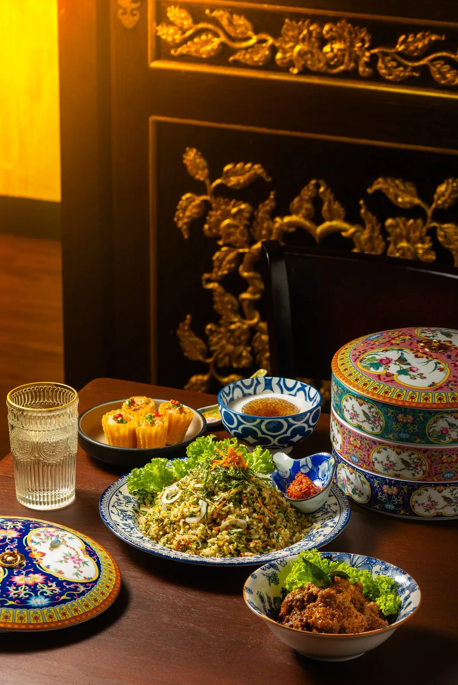

On Auntie's table · No. 03
Pie
Tee

Top hats,
filled
by hand.
Kuih Pie Tee: crisp little pastry cups filled with braised jicama. Made by hand, from scratch, in Auntie’s kitchen.
1 Bishop Street · George Town